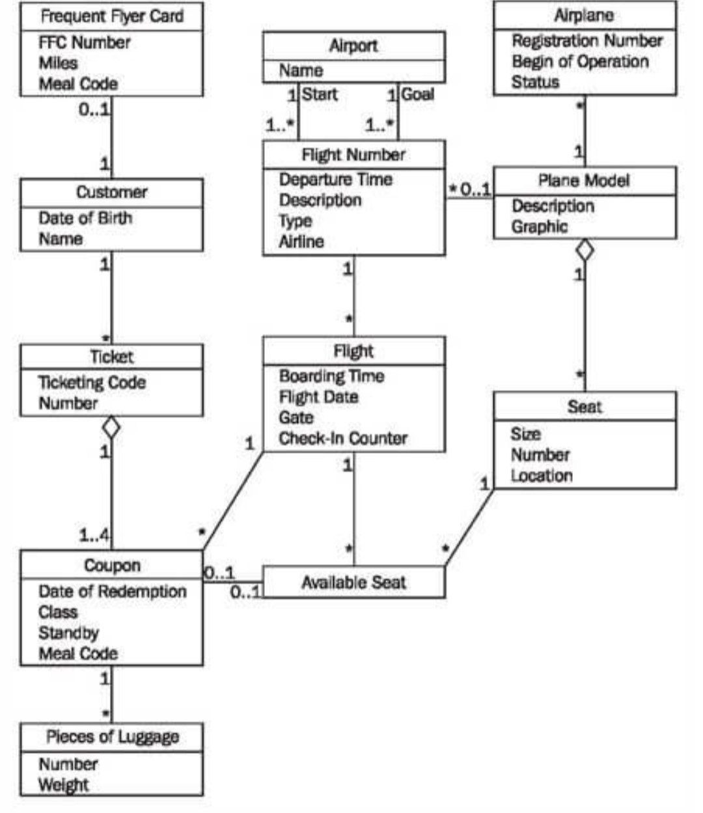

Orientado a objetos / Diagramas de clases
ORIENTADO A OBJETOS · 01
Diagrama de clases UML
Modelo conceptual de las principales clases del sistema y sus relaciones.

Descripción de clases
| Clase | Responsabilidad |
|---|---|
| Producto | Conserva la información básica del artículo y su existencia. |
| Inventario | Consulta, actualiza y verifica el stock de productos. |
| Venta | Representa una operación de venta y calcula el total. |
| DetalleVenta | Registra cada producto, cantidad, precio y subtotal de una venta. |
| Usuario | Representa al personal que utilizaría el sistema en una versión con autenticación. |